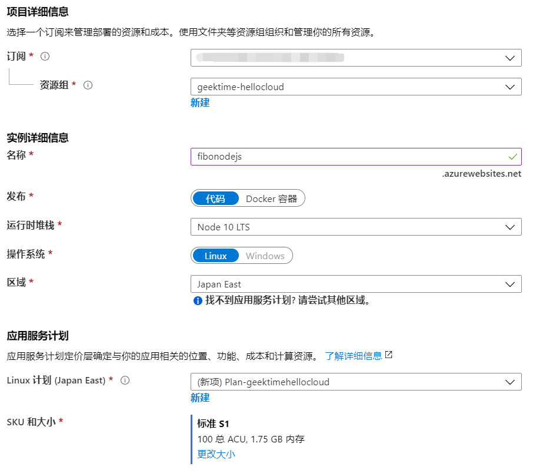
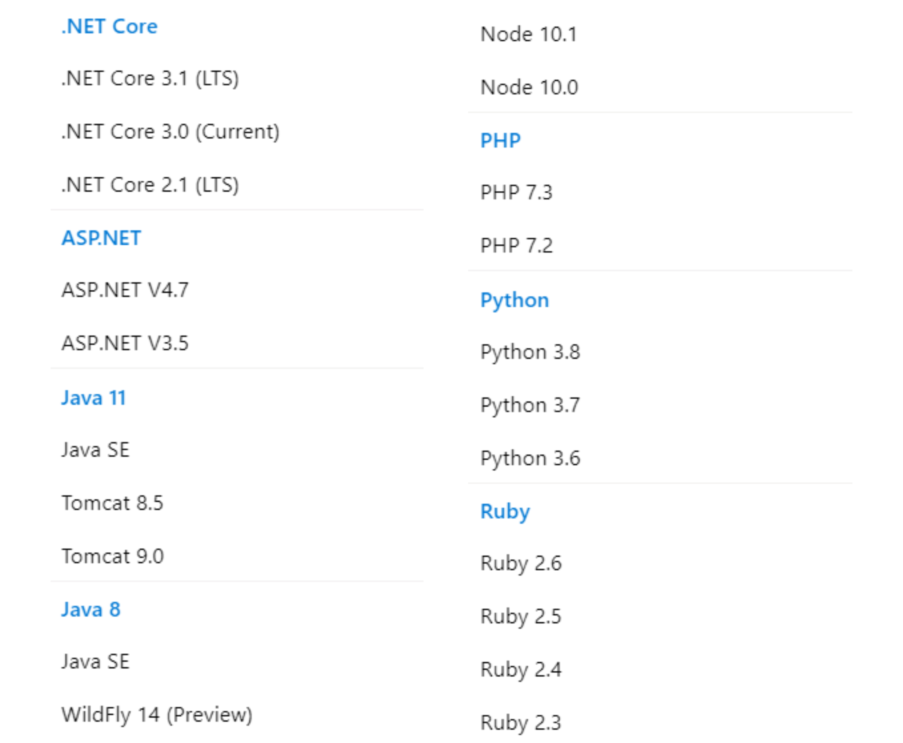
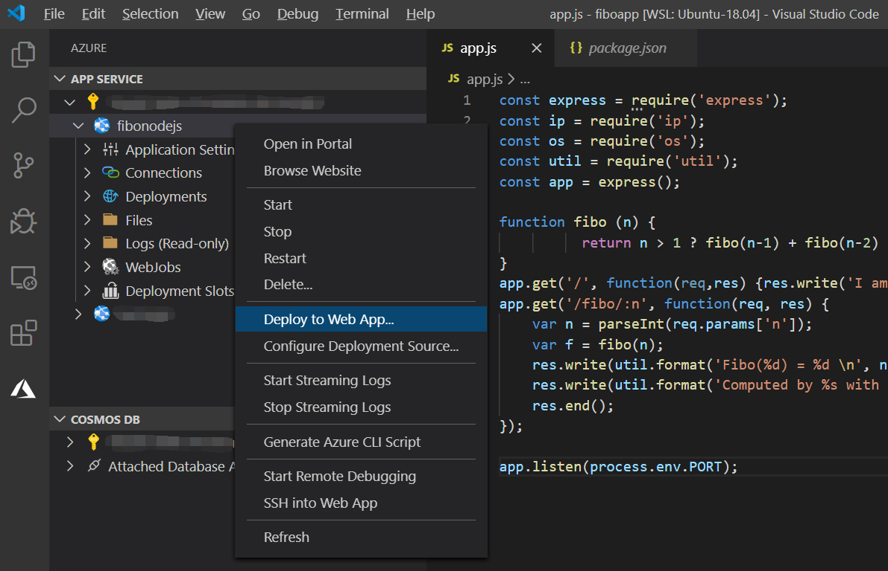
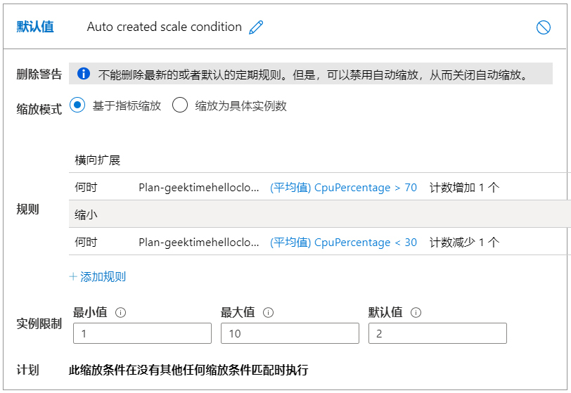
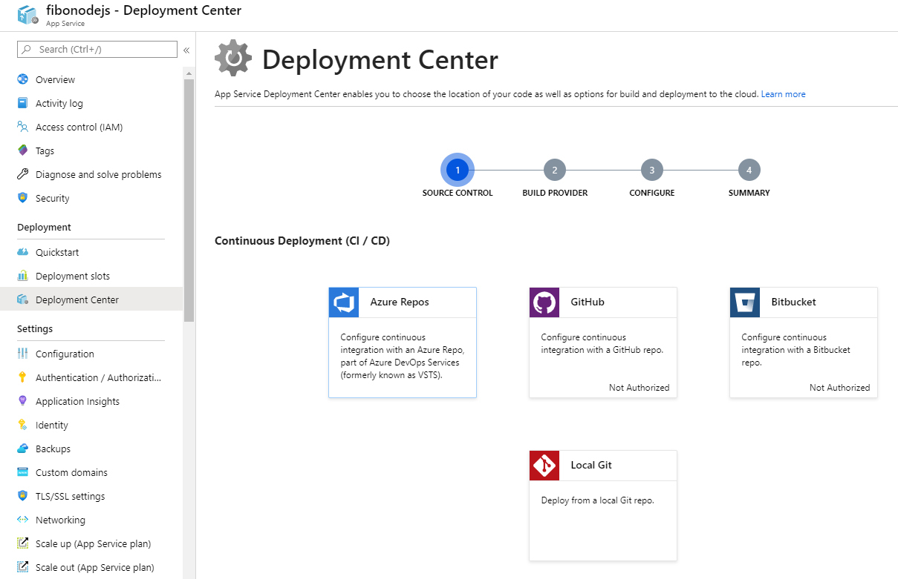

- 00 开篇词 云计算，这是开发者最好的时代.md.html
- 01 区域和可用区：欢迎来到云端数据中心.md.html
- 02 云虚拟机（一）：云端“攒机”，有哪些容易忽视的要点？.md.html
- 03 云虚拟机（二）：眼花缭乱的虚拟机型号，我该如何选择？.md.html
- 04 云虚拟机（三）：老板要求省省省，有哪些妙招？.md.html
- 05 云硬盘：云上IO到底给不给力？.md.html
- 06 云上虚拟网络：开合有度，编织无形之网.md.html
- 07 云端架构最佳实践：与故障同舞，与伸缩共生.md.html
- 08 云上运维：云端究竟需不需要运维？需要怎样的运维？.md.html
- 09 什么是PaaS？怎样深入理解和评估PaaS？.md.html
- 10 对象存储：看似简单的存储服务都有哪些玄机？.md.html
- 11 应用托管服务：Web应用怎样在云上安家？.md.html
- 12 云数据库：高歌猛进的数据库“新贵”.md.html
- 13 云上大数据：云计算遇上大数据，为什么堪称天作之合？.md.html
- 14 云上容器服务：从Docker到Kubernetes，迎接云原生浪潮.md.html
- 15 无服务器计算：追求极致效率的多面手.md.html
- 16 云上AI服务：云AI能从哪些方面帮助构建智能应用？.md.html
- 结束语 与云计算一起，迈向未来.md.html
- 捐赠
11 应用托管服务：Web应用怎样在云上安家？
你好，我是何恺铎。今天我们来谈谈云上的应用托管服务。
从互联网诞生开始，网站就一直是人接触内容的主要窗口，是互联网应用的主要形态。所以许多的编程语言和技术栈在争夺开发者的时候，都是以支持网站应用的开发作为主要的发力点。
这个浪潮催生了各类动态网站编程技术，和各种Web后端框架的兴起。而随着AJAX应用和移动互联网的到来，Web已经不只是网站了，它还包括各种各样的API。我们可以把它们统称为Web应用。
Web应用，显然是一个极为普遍的需求，也是一个巨大的市场。所以，作为承载一切的云计算，当然需要为Web应用的运行提供最好的场所、能力和辅助。
不过，你当然也可以使用虚拟机和其他IaaS组件来搭建你的网站。但用IaaS，你需要操心的事情比较多，包括虚拟机的创建、运行环境的搭建和依赖安装、高可用性和水平扩展的架构等等。而且一旦应用的规模大了，每次应用的更新升级也会是件麻烦事，另外你还要操心Web漏洞的弥补修复。
那么，能不能有一个平台服务，来帮助我们解决所有这些基础架构问题，让我们只需要专注于应用构建本身就好了呢？当然是有的，这就是云上应用托管PaaS服务的由来。
什么是应用托管服务？
和每一项云服务一样，应用托管类服务也是从简单到复杂、从功能单一到丰富强大这样一路走来的。
在云计算发展的早期，就已经出现了“建站类服务”，这正是应用托管服务的雏形。当时的建站类服务，会自动为你分配好服务器，安装好相应语言的Web环境以供你使用。在部署层面，服务通常会开放FTP端口，以便你上传服务器端的代码、脚本和资源。这是应用服务的一种轻量形式。
注意：目前仍然有云厂商提供了这种轻量Web服务的产品形态，比如阿里云的轻量应用服务器、百度云虚拟主机服务等。这些服务仍然可用，而且由于使用简单且成本低廉，在合适的场景下（比如中小企业建站）也是不错的选择。
而更现代的应用托管服务，已经今非昔比，不但在细节选项、自动化程度上进步了许多，还包含了大量的增值服务。如果你的运用得当，它绝对是一个利器，能为你节省许多的时间精力。
这类现代应用托管服务现在是各个云上的标配，AWS上对应的云服务为Elastic Beanstalk，阿里云对应的服务为Web应用托管服务（Web+），Azure上称之为Azure应用服务（Azure App Service）。
接下来，我就以国际版的Azure应用服务为例，把我们在第7讲中使用过的计算斐波那契数列的Web应用，移植到Azure云的PaaS服务上来。
首先，我们来创建一个应用服务的实例：

在上图中，我填写了一些重要信息，比如把这个实例称为 fibonodejs，系统会自动给它一个免费的域名 fibonodejs.azurewebsites.net。另外，我还选取了Node技术栈，以及Linux操作系统。在运行配置方面，我选取了标准S1，对应一个vCPU和1.75GB内存的计算资源。
这里你需要注意，除了Node技术栈之外，一般云厂商都会提供Java、PHP等多个常用语言和框架的支持。你可以事先确认一下，你偏爱的语言是否在云厂商的支持列表中。下面我还列出了Azure应用服务支持的部分环境，可以看到，同一个语言或框架还支持很多不同的版本，所以我们的选择是很丰富的。

实例创建完毕后，就相当于我们已经建好了房子，接下来的关键就是要邀请应用入住。
我们在第7讲中使用过的app.js中的源码，在这里基本不需要修改就可以直接使用了，唯一需要适配一下的是最后监听的端口号，我们需要从固定值80修改为动态值process.env.PORT。这个动态值会在应用运行时，从PaaS服务的环境变量中得到。
app.listen(process.env.PORT);
随后，我们只需要把应用的代码打包上传就可以了。我们这个Node应用比较简单，只是包含一个app.js和package.json配置文件。package.json配置文件的内容也很简洁，只有少数包依赖，以及一个初始化的启动命令：
{
"name": "fibo-app",
"version": "0.0.1",
"private": true,
"scripts": {
"start": "node ./app.js"
},
"dependencies": {
"express": "4.0.0",
"ip":"1.1.5"
}
}
我们再新建一个 .deployment文件，其中，设置SCM_DO_BUILD_DURING_DEPLOYMENT参数为 true。这个设置会告诉Azure PaaS端，在部署时帮我们自动执行npm install来安装依赖项。
[config]
SCM_DO_BUILD_DURING_DEPLOYMENT=true
然后，我们把上面提到的这三个文本文件一起打包为zip：
[client@clientVM fiboapp]$ zip fiboapp.zip app.js package.json .deployment
updating: app.js (deflated 48%)
updating: package.json (deflated 30%)
updating: .deployment (stored 0%)
接下来十分关键的一步，是我们要用Azure CLI中的 webapp相关命令，完成zip文件的上传。
[client@clientVM fiboapp]$ az webapp deployment source config-zip --resource-group geektime-hellocloud --name fibonodejs --src ./fiboapp.zip
Getting scm site credentials for zip deployment
Starting zip deployment. This operation can take a while to complete ...
我们需要做的就只有这些。当Azure应用服务收到zip包后，就会在一个隔离环境中自动解压、安装相关依赖项，并开始运行我们的应用了。
尝试一下网站服务，已经在正常地工作了：
[client@clientVM ~]$ curl https://fibonodejs.azurewebsites.net/
I am healthy
[client@clientVM ~]$ curl https://fibonodejs.azurewebsites.net/fibo/35
Fibo(35) = 14930352
Computed by 49fe1eef783e with private ip 172.16.1.4
通过这个例子，你能够看出，应用服务的本质就是为你的应用提供一个隔离的独立运行环境。作为用户来讲，你可以只专注于业务逻辑，不需要来手动创建这个环境，更不需要运维这个环境。
小提示：应用托管服务背后采用的隔离技术对用户一般是不可见的，它可能是虚拟机，可能是Docker，或者是自研的其他容器类技术。通过查看后台日志，你可以发现，Azure App Service在Linux上的后台，其实是使用了Docker来封装运行我们的node.js程序。
另外，为了便于说明操作步骤，上面的实操中，我使用了命令行的方式来进行应用的打包和部署。如果你觉得这个过程有点儿麻烦，也完全可以借助一些IDE工具来完成它。比如说，你可以使用Visual Studio Code配合App Service插件，来进行开发和部署。
而且，上面的打包上传等步骤，我们在集成环境中，只需要按下“Deploy to Web App”，一键就可以完成了，如下图所示：

所以，云厂商为了提高PaaS服务的易用性，往往会有比较成熟的开发配套工具链可以选用，这也是应用托管服务的一大优势。
应用托管的增值服务
上面我通过例子，给你演示了一下应用服务的基本功能，但它的能力远不止此。成熟的应用服务还能够提供许多增值服务，来进一步地满足我们在实际开发运维Web应用时，产生的各个层面的需求。
第一项增值服务就是监控，尤其是针对Web应用的特点而进行的HTTP层面的应用监控。所以，你不仅能看到计算资源的占用率，如CPU、内存使用率等，还能看到许多应用层指标，比如总请求数、错误响应数、并发连接数、响应时间等等。这些都是你在监控应用运行时非常有帮助的信息，而这一切都是PaaS服务自动提供、开箱即用的功能。
而且，基于这些监控的指标，你还能够在云上制定相应的报警规则，当某些指标达到你设定的阈值时，会及时发送警报。这同样是一个非常实用的功能。
第二个方面是扩展，也就是底层计算资源和流量需求的匹配。这里既包含了底层机器配置的垂直扩展，也包含了机器数量层面的水平扩展。一旦你有调整需求，只需要动动手指发出指令，就可以随时升级相应的机器配置，并无缝切换。
特别是水平扩展的存在，它相当于同时包含了我们第7讲中提到的负载均衡和弹性伸缩，把它们都一股脑儿集成到了托管服务中。这意味着应用托管服务不是只能对应一台机器，而是能够创建多台机器来承接请求，并会在前端均衡地分发到多个实例上去。这里你同样可以指定自动伸缩的规则，来让应用服务自动地调整实例数量。
下面，我给出了一个实际可用的Azure应用服务的伸缩规则示例，它设置了CPU使用率的阈值，当实际CPU占用超出阈值后，服务会自动地增加或减少实例数量。假如我们的fibonodejs服务，需要面向公众正式服务的话，就可以施加类似的配置。

第三个方面是集成，这里是指与其他PaaS的集成。这是所有PaaS服务的优势，各个服务间可以互相帮助、联合作战，应用托管类服务也不例外。比如在监控数据方面，它可以和云监控系统进行衔接；再比如，有些云允许Web应用以目录的形式，挂载对象存储中的文件等等。
其中，应用托管类服务还有一项非常重要的集成能力，就是应用服务与云上DevOps组件和流程的无缝对接。它意味着应用服务可以作为整个应用生命周期管理的一部分，嵌入到持续集成的流程中去。借助和源代码管理设施的联动，你的应用就可以轻松实现自动化的部署和升级。
比如说，我可以把上面node.js应用程序的代码，放到Azure Repo或者GitHub这样的代码仓库中，之后只要通过满足触发条件的git push操作，就能够自动地触发构建，并直接更新线上的应用程序。
下图展示了Azure App Service中相关配置的入口：

除了我在上面列举的这三方面的增值服务，应用托管服务还有许多有用的特性我没有展开讨论，比如说远程调试和诊断、运行环境自动补丁升级、私有网络内的部署、Web防火墙防护等等。这些都是它能够给你带来的强大附加价值。
和其他PaaS服务一样，对于应用托管服务，我建议你先充分地查阅文档，建立比较系统全面的认识，然后一定要通过实操，进行探索和实验，这样你就会有比较深入的理解和感受，便于你作出正确的选型决策。
课堂总结与思考
今天，我主要给你介绍了云上的应用托管服务，这也是最受欢迎的PaaS服务之一。你现在应该已经知道，它是用来支撑我们Web应用的一个平台，它既包含了应用的基础架构和运行环境，也包括了许多增值服务，大大方便了我们Web应用搭建和维护过程中的各种典型诉求。
到目前为止，我所说的都是它的优点和长处。那么，你可能会问，应用托管服务有没有弊端呢？
我认为，这主要取决于云服务的封装程度，以及你是否有环境定制的需求。有些人的确不喜欢受限的封装环境，觉得难以做一些细节的微调和必要的hack，也有一定道理。
好在现代Web托管服务，在进行高度封装的同时，也都部分地开放了内部运行环境，甚至允许你远程登录到相应的服务器上去，开展你所需要的改动或排查。这在一定程度上减轻了封装可能带来的“黑盒”问题，比如你可以查看到一些底层操作系统级别的错误日志。
另外你需要注意的一点，就是价格。不同云厂商，对于应用托管服务的收费标准都是不同的。至于它们的收费是否合理，你可以与纯虚拟机的搭建来做一个对比。特别是如果你的网站部署规模不小的话，花一些时间来做比较是非常值得的。
不过在进行比较时，你一定不能忘记，应用托管服务能够给你带来的工作效率提升，和维护负担的减轻。因为开发、部署和维护相关的人力和时间成本，都是总体拥有成本（Total Cost of Ownership，TCO）中的一部分。这也是我在许多时候，会给应用托管服务投上一票的重要原因。
这一讲，我留给你的思考讨论题是：
- Azure应用托管服务还有一个部署槽（Deployment Slot）功能，AWS中类似的概念则称为环境（Environment），这同样是一个非常实用的能力。你能说说这个特性是做什么的吗？如果你还了解其他好用的特性，也欢迎你和大家分享。
- 对于应用托管服务，通过代码打包上传来发布应用，一直是主流的方式，我在前面举例时也采用了这种形式。不过近来，通过容器来部署Web应用，也成为了云上应用托管服务普遍支持的形式。那你知道后者解决了前者的什么问题吗？
好了，今天我们就到这里。如果觉得有帮助，欢迎你把这篇文章分享给你的朋友。我是何恺铎，感谢你的阅读，我们下期再见。
© 2019 - 2023 Liangliang Lee. Powered by gin and hexo-theme-book.